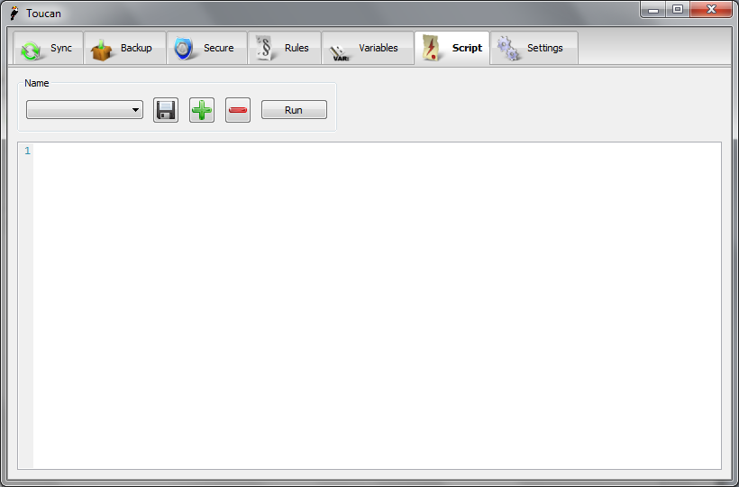

Scripts¶
Overview¶
A Script is used to tie a number of Jobs together and to provide a way to extend the built-in functionality of Toucan. Behind the scenes Toucan has an interpreter for the Lua programming language. It is a standard interpreter with a number of extra Toucan functions added and as such should accept and existing Lua scripts.
User Interface¶

The Script interface is very similar to the Variables interface. Scripts can be saved, added and removed using the standard controls in the top left of the window. To run a script simply press the Run button. The rest of the window is taken up by a large syntax highlighted text editor from creating scripts.
Lua Types¶
strings¶
In Lua strings can be written in quotes, such as "this is a string" or
in double brackets, such as [[this is also a string]]. In Toucan it is
preferable to use the form surrounded by square brackets. This is
because when in quotes a \ is treated as an escape character and thus
does not work as expected when writing Windows file paths. One solution
is to just use a / instead, which is fully supported by Toucan or to use
the square bracket form.
tables¶
When Toucan needs a list of strings it uses a table, for example when
passing a list of paths to be encrypted. The same conditions about
strings apply when they are in tables, an example of the preferred
format is {[[C:\\path\\one]], [[@drive@\\path\\two]],
[[D:\\path\\@date@]]} unlike some Lua tables we do not specify an index
for each value, they have no use to Toucan and as such just clutter the
function calls.
Toucan also uses tables when specifying options for Sync and Backup. An
example Sync map would be {size = false, short = true}. This is
technically an associative map. You do not need to set all of the
attributes when specifying these options and any that you do not will
take the default values shown on the functions documentation.
Command Reference¶
As well as all of the built in Lua commands Toucan supports the following extra commands:
sync¶
-
sync(jobname)¶ Run a previously saved job
- Parameters
jobname (string) – The name of the job
- Return type
none
-
sync(source, dest, function, checks = {size = true, time = false, short = true, full = false}, options = {timestamps = true, attributes = true, ignorero = false, ignoredls = false, recycle = false, previewchanges = false, noskipped = false}, rules = "")¶ Run a sync with the given options
- Parameters
source (string) – The source path
dest (string) – The destination path
function (string) – The function to perform, Copy, Mirror, Move, Equalise, Clean
checks (table) – The checks to perform when comparing files
options (table) – The options to use, for more information see
rules (string) – The name of a set of rules
- Return type
none
backup¶
-
backup(jobname)¶ Run a previously saved job
- Parameters
jobname (string) – The name of the job
- Return type
none
-
backup(paths, location, function, format, ratio = 3, options = {password = false, test = false, solid = true}, rules = "")¶ Run a backup with the given options
- Parameters
paths (table) – The files and folders to archive
location (string) – The location of the archive
function (string) – The function to perform, Complete, Update, Differential, Restore
ratio (integer) – The compression ratio between 0 & 5
options (table) – The options to use, see for more information
rules (string) – The name of a set of rules
- Return type
none
secure¶
-
secure(jobname)¶ Run a previously saved job
- Parameters
jobname (string) – The name of the job
- Return type
none
-
secure(paths, function, rules='')¶ Run a secure with the given options
- Parameters
paths (table) – The files and folders to secure
function (string) – Either Encrypt or Decrypt
rules (string) – The name of a set of rules
- Return type
none
print¶
-
print(message, type=Message)¶ Output a message, either to the progress window or the command line
- Parameters
message (string) – The message
type (enum) – Message type, one of: FinishingLine, FinishingInfo, Message, StartingInfo, StartingLine, Error
- Return type
none
expand¶
-
expand(variable)¶ Perform Variable expansion on the string.
- Parameters
variable (string) – The string to expand
- Returns
The expansion, or if none was found the original string
- Return type
string
delete¶
-
delete(path)¶ Deletes the given file, this does not work on folders
- Parameters
path – The path of the file to delete :type path: string :returns: Whether the file was successfully deleted :rtype: bool
copy¶
-
copy(source, dest)¶ Copies the source file to the destination, this only applies to files and any existing file will be overwritten
- Parameters
source (string) – The path to the source file
dest (string) – The path that the file should be copied to
- Returns
Whether the file was successfully copied
- Return type
bool
move¶
-
move(source, dest)¶ Moves the source file to the destination, this only applies to files and any existing file will be overwritten
- Parameters
source (string) – The path to the source file
dest (string) – The path that the file should be copied to
- Returns
Whether the file was successfully moved
- Return type
bool
rename¶
-
rename(source, dest)¶ Renames the source file to the destination, this only applies to files and any existing file will be overwritten. This is the same as a copy
- Parameters
source (string) – The path to the source file
dest (string) – The path that the file should be copied to
- Returns
Whether the file was successfully renamed
- Return type
bool
execute¶
-
execute(path, async = false)¶ Exectues the file at the given path, this can be a file to open or a program to run
- Parameters
path (string) – The path to be run
async (bool) – If false the script will wait for the program to finish
- Returns
The return value of the program is not async, otherwise nothing
- Return type
int
getscript¶
-
getscript(name)¶ Used to get the full path to a saved Toucan script. This can then be used to run a script with the following code::
dofile(getscript([[myscriptname]]))- Parameters
name (string) – The name of the script
- Returns
The full path to the script
- Return type
string